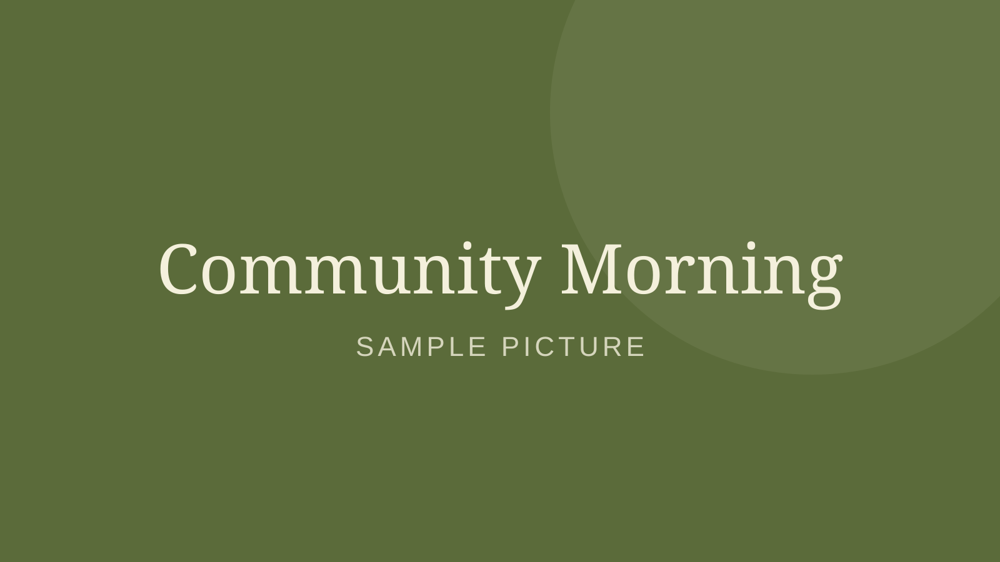
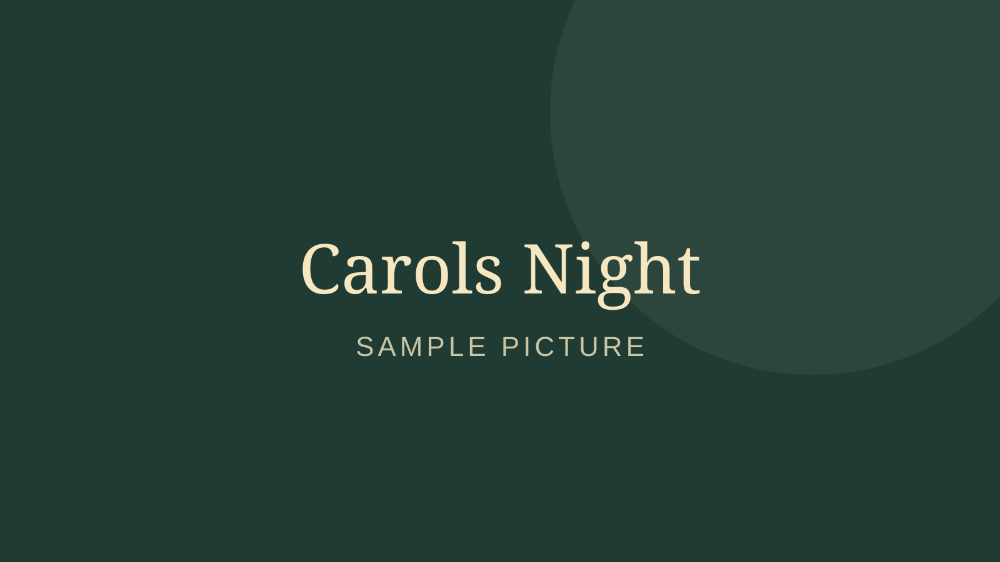

Events
November

Community MorningSat 14 Nov · 8:30am- 21Women’s BreakfastSat 21 Nov · 8:00am
- 22Anniversary SundaySun 22 Nov · 10:00am
December

Carols NightSat 12 Dec · 6:30pm
Sermons
Latest
All sermons Bearing FruitRooted · 8 Nov
Bearing FruitRooted · 8 Nov When the Road Is Long4 Nov
When the Road Is Long4 Nov- Held Together1 Nov
 A Faith That Works1 Nov
A Faith That Works1 Nov- The Lord Is My Keeper28 Oct
Rooted
The whole series- Part 5: Bearing Fruit
- Part 4: Held Together
- Part 3: Grounded in Grace
Psalms for the Road
The whole series- Part 3: When the Road Is Long
- Part 2: The Lord Is My Keeper